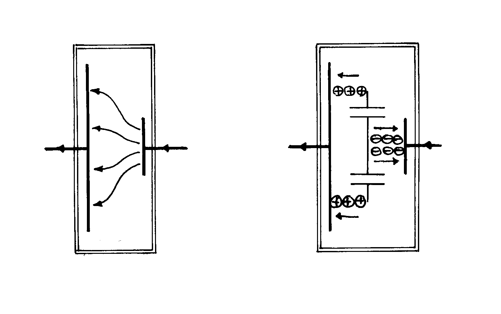
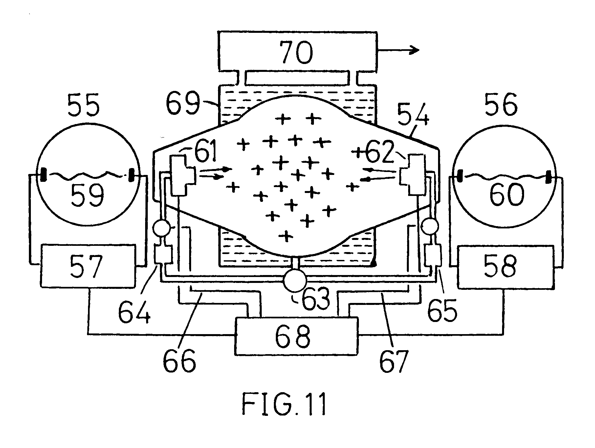
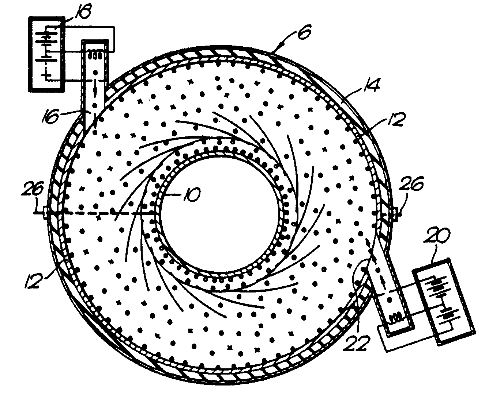
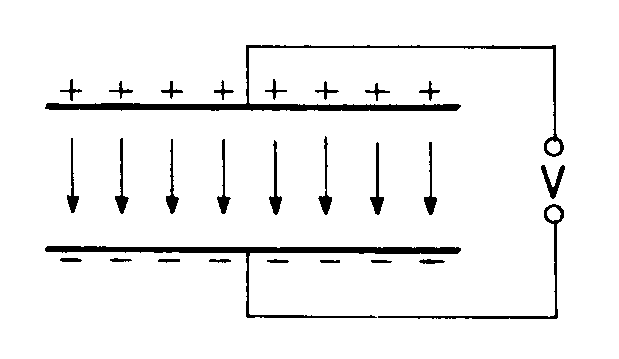
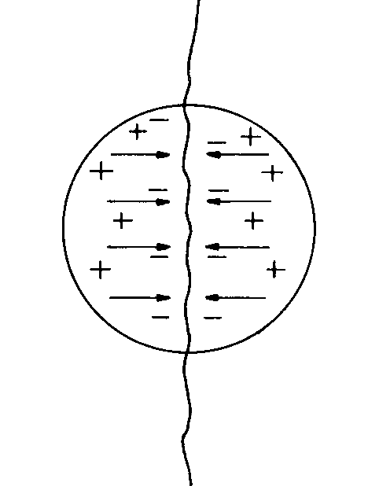
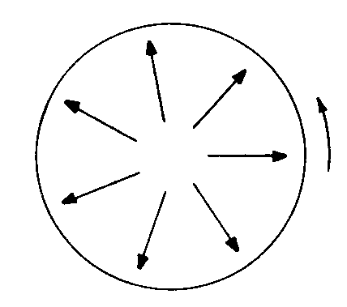
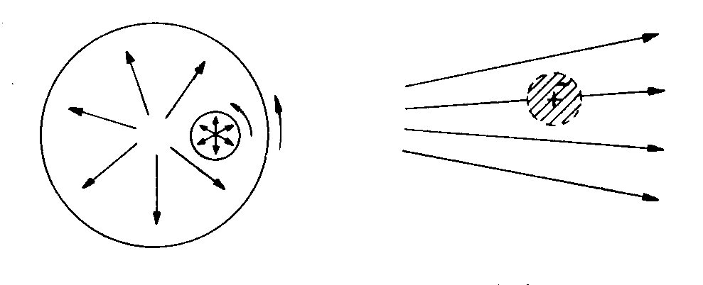
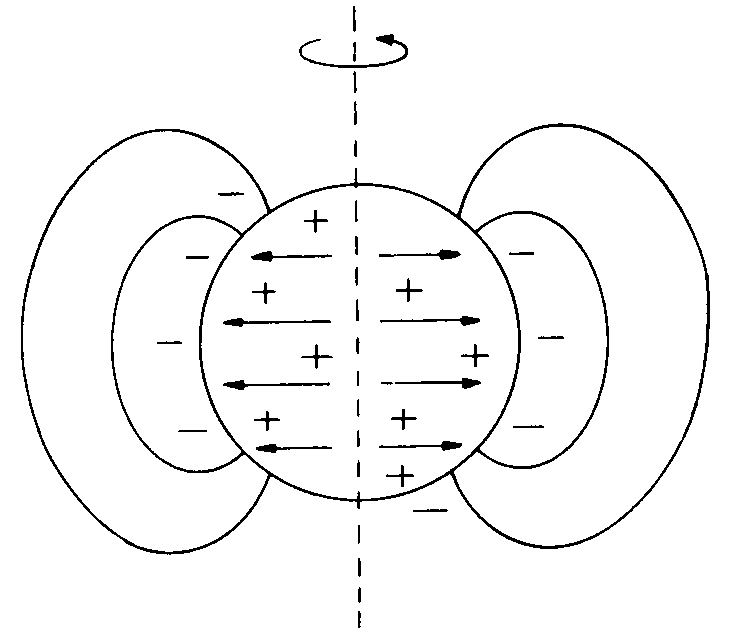

Introduction
This Energy Science Report is one of a series concerned with new energy technology and the fundamental energy science that is involved. It is devoted exclusively to the research findings of Dr. Paulo Correa and Mrs. Alexandra Correa of Concord, Ontario, Canada and seeks to explain the fundamental physics underlying their remarkable experimental discovery.
The Correa technology pioneers one of the four routes now opening up and promising to give us access to a plentiful and abundant source of what is coming to be termed `free energy'. These all can contribute in their various ways to an energy future free from pollution, but all, at this time, trespass on forbidden territory, as judged by orthodox physicists and so are not attracting mainstream scientific interest. This leaves the field open for exploration and exploitation by the few who do have the needed technical competence, the inspiration and an independence of spirit.
The four avenues can be classified as (1) cold fusion, (2) ferromagnetism (3) vacuum spin and (4) electrodynamics. Each involves a mysterious input source of excess energy and each is destined to impact the world of technology in the near future.
It is debatable at this time whether events will confirm true nuclear 'cold fusion' as the source of heat in the well publicized pioneer work of Fleischmann and Pons. It may in fact be another manifestation of the 'vacuum spin' phenomenon, by creating in an aqueous electrolyte, or even in the cathode itself, conditions somewhat analogous to those prevailing in the Correa apparatus. Indeed, there seems to be no doubt that the Correa technology itself bridges two of the above 'excess energy' categories, electrodynamics and vacuum spin. The Correa method is probably the most advanced of these emerging new energy technologies, being fully reproducible, well researched with its test findings well documented in and protected by granted U.S. patents. It already allows us to tap energy from space itself, or rather the vacuum field activity that fills space, and in contrast with the alternative methods it offers what may prove to be a mobile light-weight power source compared with the heavy apparatus needed where magnets and rotating machinery are involved. Unlike 'cold fusion' which generates low grade heat output, the Correa technology generates electricity at power voltage levels.
The physics involved in understanding the source of energy in the Correa discharge tube is as basic as that required to understand the energy source which sets up the force of gravity. Both are seated in an electrodynamic action involving, in the main, heavy ions and, indeed, the electrodynamics of the interactions between heavy ions are not well understood by scientists. This is why they have failed to solve the mysteries of gravitation and the problem of field unification and why they have missed seeing the way forward to the new energy technology which we are about to discuss in this Report.
Below we will come to describe the operating principles of the Correa invention and the action by which energy is extracted from the aether. The reader who is impatient and curious to learn some details about the technology may wish to jump ahead to read the section between pp. 6 and 8 and then from p. 17 before coming back to read what immediately follows. The sceptical scientist who does not expect to believe what is evidently being claimed will be served best by following the discourse as it now develops.
Preliminary Remarks
Having just stated that "the electrodynamics of the interactions between heavy ions are not well understood by scientists" I see it as important to justify this statement before I venture to criticize other aspects of basic physical theory relevant to the new energy field. I will simply quote a few passages from the published specification of British patent application GB 2,002,953 which I, as inventor, applied for in 1978. The title of the patent application was 'Ion accelerators and energy transfer processes'. Textbook doctrine on the subject has not progressed since that time.
"Electrical engineering has developed using the simplest formula (for electrodynamic interaction between electric charges in motion) and few today would concede that there is any question about the universal validity of this formula, the so-called Lorentz formula. More informed teachers of electrical engineering have kept the problem in mind and express caution. Professor E. B. Moullin, who was President of the Institution of Electrical Engineers and Professor of Electrical Engineering at Cambridge University at a time when the applicant was engaged on Ph.D. research in electromagnetism (1950-1953), wrote in the 1955 edition of his 'Principles of Electromagnetism':
'It is useless to speculate about the effects of electricity moving in a particular piece of circuit until we have discovered further laws of electromagnetism'
This appears at page 26 of this Oxford University Press publication."
"In a book by A. Von Engel entitled 'Ionized Gases', 1965 Edition also by Oxford University Press, there is the statement at page 285:
'There is no final answer to the question of whether the primary electrons find in the plasma an artifice which without extracting too much energy is able to transform the more or less uniform electron energy into an energy distribution which is needed to satisfy ion production in the gas. In fact it has been suggested, as a result of certain probe measurements, that there is a strong positive space charge accumulated in front of the cathode, so intense that the space potential is considerably higher than the discharge voltage and at least higher than the lowest excitation potential. How this space charge develops and how electrons have random energies sufficient to overcome the retardation in the negative field between the space charge and the anode is still an open question.'
Earlier on page 273 he wrote:
'One of the most puzzling problems of the arc discharge is the functioning of the cathode of the cold arc. Cathodes of Cu, Ag, liquid Hg, and many other metals are examples of this type. It can be stated from the very outset that no final solution of this problem has yet been found.'
Berneryd et al (Direct Current, vol. 6, 1961, pp. 81-85) studied instabilities of discharges and found positive ions to have energies very much higher than suggested by theory. Benford et al (New Scientist, vol. 56, 1972, pp. 514-516), writing about electron beams in relation to fusion, declared that a 1.3 MeV electron system accelerated gas ions to energies as high as 20 MeV. They said that the origin of the fields was a subject of speculation. Stock (Journal of Physics D, vol. 6, 1973, p. 988) found that ionization current calculated from electron energies were up to one thousand times smaller than those observed."
Now, in quoting the above I have added the underlining to the marked passages to emphasize my point that the scientific `experts' in the field do not understand the reason for these energy anomalies produced by electrical discharges through ionized gas. The scenario giving these problems is one where the discharge involves a predominant presence of heavy ions rather than the mere arc discharge of electrons freed as by thermionic emission. It applies to current in what are termed 'cold cathode' discharge tubes.
The passages quoted above should be kept in mind when reading about the technological breakthrough disclosed by the Correa inventions. The phenomenon involved has been turned to account by generating electrical power output far in excess of the input power used and so it is no longer a question of scientists declaring, as they do regularly, that they understand so much about the laws of thermodynamics that they can deny this possibility without even considering the evidence. They do not understand their own experimental findings of clear record in this particular technical field and so are in no position to say that excess power generation is impossible by virtue of a 'law' prescribed by past 'authority' in ignorance of the experimental facts just quoted.
We have here to confront the reality of this situation, namely that energy from a mystery source can be harnessed technologically, and this Report aims to explain this as well as pointing to the source of that energy and showing where accepted physics stands in need of correction.
To appreciate in full measure of what this Report is about it is recommended that the reader should procure copies of the three U.S. Patents granted to Dr. Paulo N. Correa and Mrs. Alexandra N. Correa: U.S. Patent No. 5,416,391 (issued May 16, 1995), U.S. Patent No. 5,449,989 (issued September 12, 1995) and U.S. Patent No. 5,502,354 (issued March 26, 1996). The disclosure in the specifications contains experimental facts presented in a form which amounts to an academic dissertation or degree thesis and, as I see it, the disclosure in these patents cannot now be ignored owing to their clear showing that we already have access to the hidden energy source which one can presume powered the creation of the universe.
I can also interject here a note added since the main body of this text was written to advise that a full description of the Correa project together with a copy of the specification of U.S. Patent 5,416,391 has been published in the Vol. 2, No. 7, 1996 issue of Infinitie Energy (ISSN 1081-6372), Editor-in-Chief and Publisher Eugene F. Mallove Sc.D. and that publication warrants the fullest attention.
Still as part of these preliminary remarks I further draw attention to the fact that my paper: 'The Law of Electrodynamics', appeared 27 years ago in the Journal of the Franklin Institute, 287, 171-183 (1969). It explained how one could justify, by simple dynamic analysis based on empirical data, the fact that in an electrical discharge through heavy ions there is an axial electrodynamic force acting on the ions that is (M/m)i2, where M/m is the ratio of ion mass to electron mass and i is the current carried by the heavy ions.
I stated that many authors had found anomalous cathode reaction forces in discharge studies and quoted E. Kobel, Physical Review, 36, p.1636 (1930) as measuring that anomalous cathode reaction force and showing that it was proportional to the square of current and far greater than any value one could compute from a pinch pressure in the discharge filament.
Later, in 1977, my paper: 'Electrodynamic Anomalies in Arc Discharge Phenomena', appeared in IEEE Transactions of Plasma Science, PS-5, 159-163 (1977). Here I had in mind the subject of my patent application as referenced above. See the quoted text on its p. 161 and the last five lines on p. 163, where the action was deemed to accelerate ions into the cathode as a means for generating heat. I had by then become aware of the possibility that we could tap vacuum field energy and generate heat anomalously by harnessing the electrodynamic forces set up in an axial discharge involving heavy ions. However, my circumstances did not allow me to take the proposition forward experimentally. The invention, the subject of that patent, was aimed at tapping the zero-point field energy to produce 'excess energy' heat by the electrodynamic ion discharge action which sustains a positive space charge adjacent the cathode. In contrast, as we shall see below, the Correa invention is able to produce electrical power directly by discharging that positive charge in pulses drawn through a secondary output circuit. The energy source in both cases is the same, as is the principle for setting up the positively ionized plasma and holding it transiently stable.
By 1985 a new kind of discharge anomaly had been reported as a result of passing very high current through water. I showed a simple derivation of my version of the law of electrodynamics and commented on this anomaly in my paper: 'A New Perspective on the Law of Electrodynamics', Physics Letters, 111A, 22-24 (1985). This referred to the incomprehensible enormous explosive effects found from pulsed ion discharges in pure water and pointed again to the reason advocated earlier, namely that scaling factor of m/m.
Separately in my paper: 'Anomalous Electrodynamic Explosions in Liquids', IEEE Transactions on Plasma Science, PS-14, 282-285 (1986), I presented a more detailed analysis of the incredibly high speed at which ions are driven into an electrode, in defiance of known physics. In the Correa invention to be described there is a slowing down of these fast ions by causing them to transfer energy into the build-up of electric charge in the abnormal glow discharge in front of the cathode, which energy can be drawn off as output electrical power, rather than as heat.
To complete this preliminary account I refer also to my paper: 'The Thunderball - An Electrostatic Phenomenon', presented at the 'Electrostatics 1983' conference held at Oxford University, and documented in Inst. Phys. Conf. Series No. 66, at pp. 179-184.
As can be seen from the data presented in the third Correa patent referenced above, the operation of the Correa discharge tubes at low pulse frequency indicates that energy in excess of 1,000 joules can be stored in the plasma of each discharge pulse. This implies an enormous capacitance and voltage gradients that should be far in excess of those actually prevailing. Indeed, for such energy to be contained as electric charge energy in a plasma confined within the Correa tube one would expect voltage gradients expressed in billions of V/m, unless some compensating reaction suppresses that field.
This energy of 1,000 J in a volume of plasma of the cubic cm. order is an energy density of some 109 J/m3, which is of the same order as that known to exist in thunderballs produced by lightning discharges. The Correa invention therefore, in a sense, mimics the action of lightning discharges in compacting energy into plasma balls which we see as the thunderball anomalies of atmospheric electricity.
The subject paper, which will be reproduced later in this Report as Appendix II, explained how radial electric displacement, as opposed to the transverse displacement we know from Clerk Maxwell's theory, can induce `vacuum spin' or `aether rotation' which permits such energy densities to be stored in an electrically quasi-stable manner at low voltage gradients.
The Correa technology, it will be suggested, does therefore rely on `vacuum spin' for its storage function, whilst setting up the positive plasma in the discharge tube by electro-dynamic confinement in an axial sense, as opposed to the electromagnetic `pinch' sense that features in fusion reactor research. However, though it succeeds in sustaining confinement for the pulse period, the Correa device it is not powered by a fusion process. Indeed, since this author presented the subject paper at the conference at Oxford University he has become aware of independent research in three countries on electromagnetic machines which overheat owing to the low voltages and very high current involved, but which nevertheless draw energy anomalously from the `aether' by setting up radial electric fields in a conductive disc spinning in a magnetic field. The Correa technology taps this same `vacuum spin' source of energy and the subject paper published by the Institute of Physics in U.K. points to the aether phenomenon involved.
It is of interest also to mention that geophysicists and cosmologists have not been able to explain the magnetism of the Earth or the Sun in terms of unipolar charge rotating with that body, even though a connection was recognized which gave basis to the Schuster-Wilson hypothesis. This was not just because they discovered that the magnetic field reverses periodically but because the charge needed would develop those same electric field gradients of billions of V/m that are somehow avoided in the Correa tube. This really is an interesting subject of research, all connected with the evident fact that charge displacement in the aether cancels that electric field but does not cancel the magnetic field! I therefore see the Correa research as having important implications for the interpretation of several phenomena in cosmology. See also Appendix I, where I explain why the alleged self-excited dynamo theory for the geomagnetic field is quite untenable.
I refer in this connection also to 'Space, Energy and Creation', my privately published paper, for use on the occasion of a lecture delivered at the University of Cardiff in 1977. Copies are available from Sabberton Publications, P.O. Box 35, Southampton SO16 7RB, England, the publishing source of this Report. This was a lecture delivered by the author as an invited speaker addressing students in the Physics Department at that university. It dealt with the subject of anomalous electrodynamic acceleration of ions in plasma discharges and explained why this was relevant to the induction of 'vacuum spin' which was intimately linked with the energy and momentum aspects of creation of stars and planets, as well as thunderball and tornado phenomena. The basic physics of 'vacuum spin' are there presented in a concise way for easy assimilation by students. The lecture paper also explains how 'vacuum spin' can stabilize the axial discharge and pointed to some surprising experimental work by Vonnegut on that subject. Later in a note at the end of this report text from the last page of that lecture paper is reproduced for the reader's interest.
It is also noted that an important updated section of the theoretical analysis in that paper has recently been incorporated in my new book 'Aether Science Papers', now available from the publishers of this Report.
It will be evident from this that the now-emerging technology for generating power from space energy is destined eventually to upset the physics world and particularly cosmologists. Instead of exercising their criticism to block the breakthrough developments on the new energy front, they need instead to look to their own problems, as now exposed, because they have invested so much time in futile theoretical pursuits that now come under attack.
The Correa Project
Essentially the core element of the Correa apparatus is an electrical discharge tube containing a rarefied gas. It is a tube having a special construction but which can be manufactured in much the same way as a fluorescent lamp. Its objective, when used in a special circuit, is not the emission of light but rather the generation of electrical power in excess of the input power needed for its operation.
This seemingly impossible feat is proved by providing a battery of electric d.c. storage cells large enough to deliver a high enough voltage to trigger the discharge which in turn feeds output to a separate battery of d.c. storage cells which store the electrical energy generated. Since the generation of electricity is the objective there can be no better way of proving that, over a period of time, the net energy output exceeds by far the net energy input. Measurements of instantaneous power and the energy transients can reassure an investigator that there is a power gain but sustained performance conditions are essential for a definitive proof. Indeed, this will be better understood when the principle of operation is explained. The pulse of energy input is ahead of the output pulse in time-phasing, owing to the intervening opening of the gate, otherwise described as the radial electric field, which allows entry of energy from the quantum activity of the vacuum field. The battery tests, repeated during a succession of charge and discharge cycles, using two banks of cells, one charging on output power as the other discharges input power, provide indisputable evidence of a substantial gain in power. This gives a verifiable accounting of an energy inflow that can be put to good use while enough energy is returned to sustain operation of the system. Though a cumbersome part of the overall apparatus in comparison with the small and light-weight tube, which is the heart of the system, such a battery of conventional electric storage cells satisfies a research need, but ultimately, since power feedback should make the device self sustaining, one can foresee a compact product not requiring these cells and which operates to deliver electric power, as if from nowhere.
Now, our world of technology is not really ready to accept such a claim and no amount of technical comment here concerning the specific structure of the Correa apparatus can sway the minds of a professionally qualified engineering and scientific community, well indoctrinated by their teaching and by their experience to require conformity with the well established laws of thermodynamics.
It goes without saying that one simply cannot get energy from nowhere and so there are only two issues to confront. Firstly, does the Correa apparatus really deliver what is claimed? That is a question of fact which needs the testimony of those witnessing demonstrations and able to judge what they see. Secondly, given that the Correa invention does deliver excess power, how are we to come to terms with the need to understand the true source of that excess energy? To be sure, the answer is not to be found in physics textbooks and such textbooks are not noted for disclosing unsolved mysteries. Yes, they do tell us that there is still a mystery concerning the force of gravity, which we all know should somehow find unification with the theory of electromagnetism. However, gravity is something everyone of us contends with every waking hour of our lives. It weighs upon us physically, if not mentally, but there are forces and actions seated in the energy background that are revealed only in a spurious way or come fleetingly from unusual experimental conditions. These are not recorded in our physics textbooks, because those who write such books write only about topics they understand and can explain by accepted theory.
This, therefore, is why this Report is being written. We need to understand that source sufficiently to be able to do onward design work and develop the Correa invention. We need to understand it in order to reassure those who manage and invest in new energy technology, because there has to be scientific certainty underpinning any R & D venture that is not funded as a mere academic speculation. The latter is the province of the funding resource assigned to university and to government research institutions and those responsible for such funding are very careful indeed in ensuring they avoid controversy by not investing in projects which their peers may ridicule.
The Correa project is now the trigger for taking forward the theme of some earlier research findings, notably those of Geoffrey Spence, a researcher in U.K. who has demonstrated an operable `over-unity-performing' discharge device to sponsoring interests, but whose device was presumably impractical in requiring heavy magnets to guide the discharge in a kind of cyclotron spiral orbit. There is also the research of Professor Chernetskii in Russia and possibly even the work of Tesla to keep in mind, but it is the research of Dr. Paulo Correa and Alexandra Correa that has been disclosed in sufficient detail to warrant attention at this time in view of the immediate prospect it offers for rapid technological development. Later in this Report such background activity will be reviewed because the several earlier findings lend support to the Correa project, but the immediately following sections of this Report will be devoted to presenting a scientific case concerning the true source of the excess energy generated by these plasma discharge devices.
To conclude this introduction to the Correa project, it is noted, by way of a summary, that the apparatus involves a cold-cathode electric discharge with current flow between anode and cathode producing an axially-directed electrodynamic compression force which squeezes positive ions into a ball of plasma trapped against the cathode. The electron current from the cathode delivers the negative electrons at a rate which is overwhelmed by the ion discharge pulse and the powerful ball of positively charged plasma can build up enormous radial electric field gradients which induce equally enormous cancelling electric field gradients owing to a spin reaction set up in the vacuum medium.
The vacuum reacts by propagating waves when responding to transverse electric fields around a radio antenna. However, whereas the latter promote such wave propagation according to Maxwell's theory, the vacuum spin provides a contained quasi-stable field condition which draws energy from the phase-lock of the quantum spin states of the enveloping aether field. The analogy we see in nature is the creation of the thunderball which research findings show to have electrical energy densities of the order of 109 J/m3 stored in their plasma forms. Some of the pulses in the Correa experiments operated at low pulse frequencies are found to contain energy of one thousand joules or more. With a 2 cm electrode spacing defining a plasma as having a volume of cubic cm. order, this gives 109 J/m3 as an energy density, clearly of the same order as is reported from thunderball investigations. It has, incidentally, been reported that a thunderball was once seen to enter a barrel of water and dissipate itself leaving the water at an elevated temperature. From the data collected its energy density was estimated.
However, we can now see from the Correa research findings that the trapped energy can be deployed into electrical power output and so measured as it is shed by an output pulse and then more energy can be regenerated repeatedly at the pulse frequency. The Correa data indicate an inverse relationship between the energy output per pulse and the pulse frequency, given a sustained input voltage and input current. Therefore, much of the Correa research has involved examining different electrode configurations, gas fillings and pressures, as well as different electrode materials and operating conditions, all with the object of determining which give the best power gain. Such data is presented in the Correa patents and the technical description which will be given later in this Report is directed not to the specific technology options, but rather to the disclosure of what is relevant to understanding what governs the access to the vacuum energy source.
The Root of the Problem
It is basic to the teaching of Newtonian mechanics that momentum is conserved when energy transfers between particles in motion. Yet Newton's laws were formulated before the electrodynamic action between charged bodies had been discovered and before it was known that all matter is composed of fundamental particles which are electrically charged. Scientists today declare that a substantial portion of the matter forming material bodies on Earth is really attributable to `neutrons', which supposedly have no electrical charge. However, the neutron exhibits a magnetic moment that betrays the presence of electrical charge in its composition and all we really know about the properties of a neutron apply to something that only exists as an unstable particle having a mean lifetime of the order of 15 minutes. It is mere hypothesis to suggest that neutrons exist alongside protons in atomic nuclei and so exist as a major component of matter. In fact, beta particles (electrons and positrons) have a stronger claim to a presence in atomic nuclei and these can serve with protons to account for all the properties of the atomic nucleus.
Essentially, the point made here is that Newton devised his laws without taking proper account of the electrodynamics of interacting charges and the fact that all matter, even matter we see as electrically neutral, comprises nothing other than such charged particles.
In the electric discharges of the Correa apparatus we have a scenario where heavy atomic ions, rather than mere electrons, are also the charge carriers. A rarefied gas, such as argon, in the discharge tube is ionised and the heavy positive ions are pulled one way by an electric field, whilst the electrons go the other way. The current flow is that of electrons in one part of a closed circuit but at least partially that of heavy ions in another part of the same closed circuit. To understand the physics involved, we need to know whether Newtonian principles hold valid in such a case and whether even standard electrodynamic principles hold valid having regard to the fact that their empirical basis is not the testing of current circuits where heavy ions flow in one circuit segment and electrons flow in another circuit segment.
There are undisputed and unexplained anomalies of record in the science literature concerning the very substantial cathode reaction forces set up in what has come to be termed a cold cathode discharge. These have been mentioned already but the Correa patent specifications reference several other sources and the data provided in the Correa patents include measurements of such forces in the apparatus tested by Dr. Correa.
In the cold cathode discharge thermionic emission of electrons from the cathode is avoided and an electric potential set up between anode and cathode is relied upon to trigger the discharge. Ostensibly, it seems that there is a force acting on the cathode with no counterpart force acting on the anode
The root of our problem then has two offshoots, one being the Newtonian origin of the principle of conservation of momentum and the other being a feature of accepted electrodynamic law that says that interaction forces act on charge at right angles to their motion.
There is contradiction of principle here and virtually all physics textbooks contrive to avoid discussion on this enigmatic problem. If an electrodynamic force acts on charge at right angles to its motion it cannot do any work. This means that there can be no exchange of energy with the field background owing to that interaction and other than the energy deployments that arise from electrostatic potential. It means that physics theory obscures the process of electromagnetic induction by relying on an incompatible mixture of empirical formulations which serve us well in engineering design, provided we do not trespass into territory outside the scope of the empirical protocol relevant to our problem. The Correa invention lies in that outside territory because the current circuit through the discharge tube is not one involving a closed all-electron flow such as was used in one or other of the interacting circuits that gave basis for the accepted empirical data.
It is well accepted that if there can be any breach of the principle of conservation of momentum then there is scope for gaining, or losing energy, anomalously, in seeming contradiction with the principle of conservation of energy. However, one needs to be careful to be sure that one is looking at a total system. If the field background contains energy, even the energy stored by magnetic induction, it must participate in the energy conservation process and that field background is not something we can isolate as belonging exclusively to a particular charged particle or a particular current circuit. There is enough energy activity in the vacuum (the aether) owing to its intrinsic charge motion that underlies the quantum control of atomic electrons to assure the buffer needed to keep faith with the law of energy conservation, whatever anomalous forces are developed in any apparatus we can build.
In the university teaching of dynamics as evidenced by a textbook by an author in Cambridge, the seat of learning attended by Isaac Newton, and published by Cambridge University Press, the principle of conservation of momentum is deduced by the preliminary assumption that internal actions and reactions between particles are equal and opposite in pairs. It is as if each and every paired combination of particles interact with one another without any dependence upon anything else. This is manifestly not the case for the electrodynamic interaction because electrodynamics has a dependence upon motion relative to a frame of electromagnetic reference, something totally absent from Newtonian mechanics.
When Einstein tried to bring conformity between inertial and electromagnetic effects his transformations of the space and time dimensions led him to the Lorentz force law, which prescribes that the interaction force between two electric charges in motion is not directed between the two charges as internal actions and reactions between particles that are equal and opposite in pairs. This condition is only met where the two charges travel at the same speed side-by-side along parallel paths and this clearly is not the case for the discharge current through the tubes used in the Correa apparatus. An electrical discharge likes to form a kind of filamentary current with charge travelling in line, each ion or electron following behind its like form but the negatively charged electrons dodging around the heavy ions or even replacing electrons in the atomic ion and neutralizing its state.
It follows, therefore, that, whether one relies on the principles of Newton or Einstein, or both, these being the accepted doctrines, the resulting theory will have no certain bearing on the practical situation encountered by the Correa research.
This means that, with the vast majority of scientists all conforming with the restrictive disciplines of physics that confine knowledge to conventional technology, those few who venture into the new energy world with an open mind confront some very significant opportunities.
So, first and foremost, we must be prepared, when considering certain very special situations in electrodynamics, to go against the teachings of our profession and pay attention to the messages in the experimental findings disclosed by the Dr. Paulo Correa and Mrs. Alexandra Correa.
The earlier messages about anomalous electrodynamics which this author found in the many scientific papers of record were sufficient reason for investigating where the errors had crept into our theories. The author discovered how energy is stored by electromagnetic inductance within a metal body and how it is later retrieved from within that conductive material. This provided the onward inspiration for questioning how the electrodynamic interaction between two electric charges in motion is affected if they have the same charge magnitude but different mass. There was, in the metal, a magnetic field reaction which was not properly factored into the diamagnetic state as analyzed in conventional theory.
It was in fact ignored, because energy was not the focus of attention in the use of the Lorentz field formulation, but if its energy role had been duly noted and incorporated in the theory of the steady field situation, it would have given explanation of the factor-of-2 anomaly that became known as the g-factor. This is a phenomenon of charge in orbital motion, but theoretical physicists sought to solve the problem by inventing what they called 'spin', even though a charge which `spins' is not moving its centre of charge and so its field is not changed by a changing spin condition. There are angular momentum issues involved here in relation to magnetic moments and the g-factor was measured in solid metal rods by the ratio of these two quantities. The essential step needed to explain that factor-of-2 in terms of orbital reaction of electron motion required taking the argument from within the metal to the external vacuum field. There has to be in the aether the same basic g-factor reaction as applies within a metal conductor and this clearly points to the g-factor reaction being at the heart of the field energy storage by magnetic induction. The aether and its angular momentum properties as well the thermodynamic properties associated with the activity of its charge composition cannot just be brushed out of sight by a flourish of the mathematician's pen.
I interject here the comment that I am not unaware of the anomalous g-factor account afforded by Q.E.D., the theory of quantum electrodynamics. This is regarded as being the only theory of relevance on the subject of electron dynamics, because it can explain the g/2 factor of the electron as being 1.001159652. It involves copious mathematical exercises that are far too extensive to be fully worked through and documented to that precision in any textbook. Indeed, as the successive advances in precision measurement crept to this quoted value, the theoretical physicist was always found to be lagging behind in trying to work through to the next iteration in the calculation. If, on the other hand, the reader would like to see a derivation of the factor 1.001159652200 fully presented in only three printed pages, the reference is the Lett. Nuovo Cimento, 32, 114-116 (1981), this being a well known English language periodical published by the Italian Institute of Physics which was noted for its rapid publication of new scientific contributions.
A later very relevant reference on the same theme, but more closely connected with the energy source we are concerned with in the Correa invention, is my paper entitled 'Fundamental constants derived from two-dimensional harmonic oscillations in an electrically structured vacuum', which appeared in Speculations in Science and Technology, 9, 315-323 (1986). This paper, as the title implies, referred to synchronizing constraints as between aether charge in its quantum activity as part of the vacuum medium. The analysis, which is quite brief, is also reproduced in my new book 'Aether Science Papers'.
As energy is 'lost', as by thermal radiation into outer space, it is absorbed into the quantum activity of a two-dimensional oscillating system. There is equipartition of energy as between charge displacement and kinetic energy. Now, if this energy system of the field medium is caused to move in one region relative to another region of that same medium, this invokes that constraining action because the aether charge is kept in synchronized motion at a universal rhythm, the photon frequency at which the surplus energy can materialize as electron pairs or heavy electron pairs (the latter being otherwise known as `muons').
If, on the other hand, one interferes with this activity by producing a positively charged cluster of ions, this sets up a radial electric field and forces radial charge displacement in that aether medium. This would upset the timing as each displaced element of aether charge in its quantum orbit moves faster about the centre of the orbit in one half cycle and then slower in the next half cycle. However, the synchronizing power coupled to all that energy in the aether resists that and assures a perfect phase-lock with the result that, to hold smoothly in that state, the whole system of aether charge has to rotate about the centre of that radial electric field. The glow discharge in the Correa tube becomes the seat of what this author has called 'vacuum spin'. Such a spin condition derives its power by drawing on energy from the universal field system enveloping the glow discharge. In other words, the action promotes the inflow of aether energy from outer space.
The key to all this is that synchronizing influence or phase-lock that is at the very heart of quantum theory, this being a theory that represents the properties of the harmonic oscillator and is governing at the microcosmic level where individual electron motions are coupled to the action quantum. Planck's constant is, in fact, determined by the structural form of the array of aether charge which constitutes the elusive, but real, medium we call the 'vacuum'.
This link between the vacuum medium or vacuum energy field and electrons is crucial to our problem of tapping energy from what we see as empty space, but to get things started we need to set up that positive core charge. Here, rather than just using electric field effects to pull electrons out faster than the positive ions can make their way to the cathode of a discharge tube, we find that the action can be augmented electrodynamically as a function of current discharge.
The heavier mass of the positive ions helps enormously in making them more sluggish, but it needs real force to compress those ions into a positive ball of plasma and here the anomalous electrodynamic interaction forces along the current axis become effective.
It is a curious fact of accepted physics that the interaction forces between two charges in motion are assumed not to have any dependence upon the mass of the particles transporting those charges. We use Newtonian mechanics to argue that momentum has to be conserved, momentum depending upon mass, but somehow eliminate mass from the electrodynamic problem. Why then should we be surprised to hear that when experiments are performed involving charge interactions between heavy particles and light particles, atomic or molecular ions and electrons, we encounter energy and momentum anomalies?
The very substantial anomalous cathode reaction forces observed in reported experiments indicate that a powerful force is exerted on the cathode with no counterpart reaction on the anode. They indicate, by theory alone, that energy is being shed by the inductive system in excess of that supplied when the discharges through the device are pulsed. However, the Correa research gives us the experimental proof.
As an aside here, it is mentioned that the energy source is much the same as that already discussed in Report No. 1 in this series, where the author has pursued his interest in ferromagnetism to show that the energy set up inductively in a gap between two magnetic poles can exceed the energy input to a magnetizing winding. The energy source in the latter case is the quantum priming of the electron motion in the atoms in the ferromagnet. However, in the Correa situation, access to that energy is more directly associated with the motion of the underlying electromagnetic frame of reference. In a sense, the quantum world involves microscopic orbital motion of a charge system constituting the vacuum medium at a very high frequency, the Compton electron frequency, whereas superimposed on this there is a low frequency rotation of a very extensive electromagnetic system. Both of these motions feed the anomalous energy to the Correa apparatus.
The Earth would have to stop rotating and to arrest its translational motion with the local galaxy before the energy resource harnessed by the electrodynamic action in the Correa apparatus can be exhausted. However, the energy of the quantum activity at that Compton frequency will never be exhausted, simply because the rest condition of the vacuum medium is one of negative electric potential and the absolute ground state cannot go sub-zero anywhere. Then, because energy is conserved overall, we must have activity, meaning motion of charge, which keeps the charge displaced to positions of positive finite potential in which its motion stores additional energy, the fluctuations of which give life to the universe.
Now, physicists, except at least for this author who is also professionally qualified as a physicist, are locked into the belief that momentum as well as angular momentum are conserved, meaning that an isolated system cannot by its internal interactions develop any angular momentum or linear momentum. For this reason, so far as they are at all interested in the problem, they have been very perplexed by the fact that the solar system has angular momentum that is not zero. Indeed, the Sun and the planets all rotate in the same sense and so the Sun must have been created in a rotating state before it shed matter to form the planets. By standard physical theory this is not possible but it is nevertheless an indisputable fact. How then have cosmologists come to terms with this problem? It is all too easy to say that the angular momentum was there, shared by matter in its galactic circulation, before that matter condensed to form the Sun, but that says nothing about how it all started. One hypothesis was that another star grazed past the Sun to set it in rotation and in the process disperse the matter that condensed to form the planets. Yet when the chance of this occurring was estimated it was found so improbable that of all the stellar systems in the universe the solar system would possibly be unique as the one having planets. Another hypothesis was that all the stars were created together in a Big Bang and were so close at the time that they could exchange angular momentum and so move outwards in a spinning state.
What is not seen as possible by accepted physics teaching is the acquisition of angular momentum and linear momentum as energy was fed into the nucleating star to create it. Energy transfer from 'somewhere' surely implies that momentum and angular momentum can flow in from that same 'somewhere'. So it seems very logical for some of us to be open to the possibility that somehow Nature has a way of breaking faith with what we have adopted as the laws of physics, because, as surely as the Sun was created, there is a physical process that is non compliant with our modern physics teaching.
The author submits that it was the initial onset of gravitation that triggered creation and caused the dispersed electric charges in the universe to condense to form stars, in much the same way as ferromagnetism appears in iron as it cools through its Curie temperature. This brings into account the anomalous transfer of energy and momentum to matter. The heavy protons would converge to form the stellar nucleus before the lighter-mass electrons could come together to neutralize the star so formed. The electrodynamic interactions between electrons and heavy ions during this primordial period would set up the linear momentum of the star and the transient radial electric field in the conductive plasma would develop the vacuum spin which imparts the angular momentum.
The technological discovery evident from the Correa research is therefore giving direct evidence of the anomalous electrodynamic force interactions between heavy ions and electrons, which go hand in hand with anomalous momentum and anomalous energy. The physics involved in such research is much closer to the subject of energy powering the Sun than is the physics of nuclear fusion.
Readers who decide to look up their book references on Newton's laws should consider the right way and the wrong way of presenting those laws in the light of our knowledge of electrodynamics. Newton himself, if he were alive today, would surely be prepared to restyle his argument if, by doing so, he could adapt the laws to extend their cover beyond macroscopic mechanics and embrace the microscopic dynamics of electric particle interactions.
Firstly, note that it is Newton's third law of motion that is in issue, the balance of action and reaction. Newton combined this law with the principle of conservation of energy and was able to deduce that two particles, not necessarily having the same mass, would emerge from a collision with their relative velocity reversed. In sharing their energy the velocities of the two particles have to adjust so as to assure that they separate from the collision with a relative velocity that is -1 times their relative velocity just before impact. This is known in mechanics as 'Newton's rule'.
Secondly, note that it is logical that if two conditions determine a third condition then that third condition taken with one of the two conditions can determine the other of the two conditions. If, therefore, Newton had taken his 'rule' to be his third law, especially as it is more easily demonstrated, as by propelling a metal ball into another at rest and observing that it transfers its motion to that other ball, then he would have got things the right way around. The new law would be a 'law of relative motion' and, taken together with the principle of energy conservation, one can then deduce that action and reaction follows 'as a rule'.
Thirdly, given this latter entry to the physics of electrodynamics, one can give support to the 'law of relative motion' because electric charge interactions are dependent upon relative position and so upon relative motion, but not dependent upon mechanical inertia.
Fourthly, however, we have a new scenario once electrodynamics get into the act, because whereas a pure mechanical system involves the summation of discrete collisions between pairs of constituent particles, which only see their own energies as involved at the instant of collision, the case is entirely different for the electrodynamic interaction. The reason is that there will invariably be numerous other electric particles in motion in the immediate locality of the colliding charges. The conserved energy is not exclusively that of a collision between a discrete pair of charges.
In the latter situation the derivation of the 'rule' that action and reaction are always equal will fail. Energy will always be conserved but one cannot in this case formulate the relevant energy exclusively in terms of the square of a relative velocity. In mathematics every square power of a quantity has two roots, one positive and one negative, which is why we see the relative velocity of two colliding balls reverse after their impact. It is all a question of mixing vector and scalar quantities. Energy is a scalar quantity but velocity is a vector. We can take numerous particles conforming with linear vector equations and add their individual contributions to determine the overall state of a combined system, but once we start changing those vectors by working out the square roots of component scalar energy quantities, without being able to exclude the external cross interactions between charges acting on the two in collision, we really are headed for trouble.
The well proven laws we have accepted for mechanics cannot be applied to practical situations where there is a dominant electrodynamic effect involving the interaction of electrons and heavy ions.
This rider has been added because Nature contrives to deceive us in a rather curious way when we apply the Newtonian philosophy to the electrodynamics of the closed circuital all-electron current flow. We find we can use the Lorentz force law which does not conform with Newton's law of action balancing and reaction and apply this to all the discrete elemental current circuit interactions to find in the end that they sum to give the balance needed to satisfy Newton's law for the circuit as a whole.
This is a quirk of the mathematics of this situation combined with the fact that the Lorentz formulation prescribes force on charge in motion acting at right angles to that motion. A force so directed can do no work and so the summation of all the individual interactions will result in no work being done, meaning that the circuit carrying current is not giving or drawing power from its field environment. It can therefore not assert force on that environment and so internally its action overall must balance its reaction. Yet, as soon as we change that current, there is inductive energy exchange with that field environment, which means that somehow the forces on the electrons moving through that circuit are no longer at right angles to charge motion. Electric fields have been set up by induction effects and the moment these are introduced one is bringing into play empirical rules, all of which have been discovered by experiments where at least one of the interacting current sources is all-electron closed circuit flow or its equivalent.
Once one departs from the latter constraint one enters a realm needing new physics tailored to the problem of electrodynamic interaction between heavy ions and electrons, because the mass of the charge carrier has to play a role in the dynamics of force-producing situations. In fact, analysis shows that it is the mass ratio between two interacting charge carriers that is the dominant consideration and it so happens that in the all-electron current flow circuit this ratio is unity, thereby disguising its true relevance in an electrodynamic formulation. Once that ratio is measured in thousands as is the case the heavy ion to electron mass ratio, then we enter a whole new scenario, the one into which the Correa research has ventured.
In summary, therefore, the root of the problem of understanding why the Correa apparatus actually works is intermeshed with the basic principles of Newtonian mechanics and their inadequacy in coping with the conditions peculiar to the electrodynamic interaction. To adjust our theories to the facts of the Correa experiments and at the same time bring conformity and unification into the connection between Newtonian mechanics, gravitation and electromagnetism, we need to correct the empirical law of electro-dynamics so that it embraces the interaction between heavy ions and electrons. There has to be a mass term in the law of electrodynamics.
This author derived the inter-electron interaction law nearly 40 years ago and the version with the mass ratio term some 30 years ago but it was not until 1969 that its derivation featured in a scientific paper as published by the Journal of the Franklin Institute. This was referenced in the earlier introduction. The law thus formulated in no way conflicts with the accepted Lorentz law when applied to the same problems, those involving closed circuital electron current. It indicates powerful anomalous forces on heavy ions flowing between electrodes in a gas discharge tube where the current circuit is completed by a partially closed electron circuit. These anomalous forces generate the build up of electric charge at the cathode which establishes the condition needed to trigger excess power output from the Correa discharge tube.
The Dilemma Confronted
Hopefully the reader will now join the author in confronting the dilemma which has been introduced in the foregoing pages.
We have on the one hand certain anomalous facts of experiment which have been building up over many years and are now crowned, not so much by the Correa discovery, but by the fact that the Correa patents disclose so much experimental data that technologists have the way charted to begin to invade the new energy world.
We have on the other hand a well established scientific belief system enshrined in notions of the so-called Big Bang creation of the universe and the notions of a relativistic four-dimensional space-time metric which aims to destroys belief in an aether brimming with energy.
We have intermediate these extremes the knowledge that physicists and cosmologists openly admit that they are still searching for their Holy Grail, the Unified Field Theory, by which they mean a theory conforming with the Einstein doctrine but yet bridging the gap between electrodynamics and gravitation.
Supplementary to this we have the very extensive theoretical contributions of this author, all built on the revision of physics resulting from acceptance of a vacuum energy medium and that law of electrodynamics as adjusted to permit anomalous force imbalance in the interaction of moving electric charges of different mass. The author's theory is an all-embracing unified field theory.
In the appendices which follow this text many of the relevant references will be listed. The author has come to realise that the scientific community is so entrenched in its dedication to the Einstein doctrine, which is linked with the Lorentz force law, that no amount of contrary reasoning based on new theory will be heeded.
This is why the experimental discovery demonstrable by Dr. Paulo Correa and Mrs Alexandra Correa is of vital importance, not just as a way forward which offers us direct access to a new source of energy, but for its scientific significance.
The anomalous cathode reaction forces discovered and duly recorded by past experimenters have been swept aside by physicists with the presumption that there must be sufficient electrode vaporization to explain the cathode reaction force. That process would, of course, impart a back pressure on the vapour that would assert a balancing force on the anode. However, I am not aware of any tests that confirm the balancing reaction on the anode and I find it difficult to understand how vaporization of a metal can impart much more energy to the freed atoms than is implicit in the latent heat of vaporization. See the later comment on this point.
The generation of excess energy in seeming breach of the law of action and reaction is the decisive factor in determining the scientific truths involved in this situation and the Correas have taken us forward decisively on that front.
What lies ahead, therefore, is not only the entry into a new energy regime, but the prospect of a developing thrust in aerospace applications and a scientific revolution as the extremes of modern philosophy in physics collapse into a more rational picture.
The dilemma the reader now faces is whether to do nothing and simply watch events, leaving the task to others, or whether to explore and probe the Correa claims to try to trace a flaw in their experiments, (if there is one to be found!) or whether to stand by the principle that what amounts to 'perpetual motion' is impossible and so pass judgment solely on the strength of that conviction.
It may or may not help the argument to say that each atom in the reader's body exemplifies the reality of 'perpetual motion', because if the reader were to die and be cooled down to the absolute zero of temperature, minus 273oC, the electrons in every atom in the reader's body would keep moving perpetually. All that is suggested by the new theory underlying the new energy science is that, by understanding the quantum activity of the aether and showing how it determines the Planck constant and regulates electron motion in atoms, we can see a way forward to tapping into that energy system.
The obvious challenge comes in the statement: "Prove it by demonstrating something that works." Well, the Correas have done that! Yet even that will not be enough to turn the scientific world upside down, because the cry then is: "Where does the energy come from?" Well, the author has outlined the explanation above! Yet that will not be enough, because the scientists who are able to judge the theoretical arguments would rather not waste time in that effort, being so confident that there must be flaws.
So, assuming the worst case scenario, the final arbiter is likely to be the public at large, those who care little about where the energy comes from, so long as it is cheap, plentiful and non-polluting. That means that we will need to see several technologies develop all generating energy in a way which confounds the physicists but all aimed at the domestic market or the small user, such as by providing back up power to keep electric batteries on a boat charged when the boat is not being used.
In saying this, the author is aware of initiatives around the world and particularly in Japan which do seem to be backed by adequate funding and which suggest a lower level of prejudice against the new energy theme. So it is really now a question of waiting to see how the situation develops, trusting that what is explained in this Report will contribute to forward developments.
Even though we will hear much about new technology in the form of anomalous heat generation at water temperatures and new motor technology in which magnets play a dominant role, all pointing to excess energy generation, whichever technology is the first to command enough attention to convert Establishment opinion from disbelief to belief will pave the way for acceptance of the other technologies.
In this race, the Correa technology has a distinct advantage in that it is already the subject of three granted patents in USA, in that the claims of these patents cover, quite broadly, the three key aspects of what the Correas have discovered and in that the scientific basis is seated in anomalies long recognized in scientific literature by authoritative institutional researchers.
This is why much of the remainder of this Report simply gives references and abstracts as there seems little that needs further explanation other than the provision of a brief description of the way in which the Correa tube taps aether energy.
As with any technological development introducing a new electronic device it will be necessary to involve experts in the design for mass production, with particular attention to the problem of enhancing electrode lifetime. There will be scope for more invention in improved design structure of the electrode configurations and choice and composition of electrode materials, but there are some new and interesting principles embodied in the patented Correa apparatus and these should survive and have value as the technology comes into commercial use.
I am writing this section of text on February 13, 1996 and have just received my copy of the February 1996 issue of New Energy News, a monthly publication edited by Dr. Hal Fox and issued from a postal address P.O. Box 58639, Salt Lake City, UT 84158-8639. At pp. 10-12 I summarized the 1 hr documentary shown on British television on 17th December 1995 concerning 'free energy'. That programme included reference to research on energy from plasma discharges, notably by reference to the research of Professor Chernetskii in Moscow, but the programme was compiled before news concerning the Correa discovery came to light. Accordingly, in my submission to New Energy News I did refer to the Correa research in Canada. I find, incidentally, that the editor, Hal Fox, interjected the additional note that "The work by Kucherov, Karabit & Savitimova has also shown excess heat generation from a `glow discharge'", but I have at this time no data on that subject.
The remaining body of this Report will concentrate on a simple illustrated exposition as to why the abnormal glow discharge in a Correa tube generates excess energy and how that energy is taken off as electric power rather than as heat. So far as possible what is presented will be extracts from what has already been published on the subject, since it is not appropriate to elaborate new theories to explain the operation of the technology discovered by Dr. Paulo N. Correa and Mrs Alexandra Correa. The object here is to show that the scientific basis of the discovery is something in common with natural phenomena that have hitherto defied accepted explanation when the physics was there on record but was ignored.
Operational Characteristics of Correa Discharge Device
The excess energy mode of operation of a typical Correa discharge device involves cyclic current oscillations in the EF region of the operational characteristic depicted in Fig. 1 of U.S. Patent No. 5,416,391.
Note that AGD denotes the abnormal glow discharge region. The plotted data show how current varies as the voltage between the electrodes increases. There are two regions of negative resistance. The one at higher current is used to develop pulsating current oscillations which allow excess energy to be drawn from the device.
To get current to flow between the two electrodes in a cold-cathode discharge tube containing a rarefied inert gas such as argon a sufficient voltage, of the order of 1,000 V, is needed to initiate ionization. Much then depends upon the circuit connected to the tube and the load conditions that can limit the current to certain levels, which in the case of the Correa invention hold the current in a stable pulsating oscillation mode. Normally the current will climb to the VAD region where the high current vacuum arc discharge condition applies. That state does not deliver excess energy output.
Once the ions are formed (Fig. 2) a flow of current through the tube arises by the attraction of electrons to the anode and the migration of the positive ions owing to their attraction to the cathode.

Because the heavy positive ions do not move as rapidly in the field between the electrodes as do the electrons, there will be a residual positive space charge established, particularly adjacent to the cathode.
This means that there will be a radially directed electric field gradient from the centre of the glow discharge. Now, how does the medium to which we attribute electromagnetic wave propagation in terms of Maxwell's displacement current respond to a radial electric field? It responds by trying to cancel the plasma charge field, just as it does in a parallel plate capacitor. Nevertheless there is a difference. There the electric field is applied from outside, namely from the electrodes, and the Maxwell displacement, which comprises two separated layers of charge of opposite polarity, simply confronts the charge on the plate electrodes and screens it by placing one polarity charge adjacent one plate electrode and the other polarity charge adjacent the other electrode.
In the absence of an electric field vector, the scalar reaction of the aether is to store energy by equipartition between kinetic and electric displacement energy by expanding the radii of the orbital quantized motion of the elements of its aether charge. This is the basis of this author's theory for the photon and the derivation of the theoretical value of the fine-structure constant [Reference 2 in the bibliography].
The aether responds to the field vector mode of a linear electric field displacement by storing energy as electrical field energy. This amounts to an internal strain in the aether and, if a gas is present, it may become ionized. Here there is translational motion of the charge system in the aether but no kinetic energy is added to its overall quantum state because the displacement of the charge orbits in local aether regions is affected by synchronizing constraints exerted from external aether regions which assure phase lock. These constraints, rather than the applied electrical field, provide the energy needed to sustain that translational motion. This is why the aether cannot be sensed in terms of the mechanics of linear motion. This aspect is a subject mentioned in reference [57].
The aether responds similarly in response to the radial electric field vector, because it is able to set up a state of spin or rotation which involves inflow of kinetic energy in the aether itself, energy which is supplied from the external aether owing to the phase-lock just mentioned. In this case, if the external influence which sets up the radial electric field subsides in strength, the phase-lock persists but the kinetic energy which has been fed into the field system from the external aether cannot return to its source by virtue of that same phase-lock. This is akin to the situation where a dog with its feet firmly locked to the ground can wag its tail, but the tail cannot wag the dog and, with it, body Earth. Therefore, the energy in the aether spin has to be shed in a different way, but by virtue of the synchronizing constraint which now forces a radial charge displacement powered by the captured aether spin energy.
In other words, what is stored in the spin state as aether input energy becomes available as electric field energy which can be tapped by drawing power from the electrodes of the Correa tube, just as if the glow discharge were a capacitor.
To do this it is necessary to have pulsations and here there is an aspect which warrants further theoretical research, but which seems to have already found a practical solution in the Correa device. The point of interest is that, in theory, we need to add as many joules of energy to build the electric field condition as we can expect to draw in as excess energy from the enveloping aether. This is because the aether has certain harmonious features consistent with equipartition of energy between electric and dynamic (kinetic or magnetic) states. The puzzle then is that of understanding how energy efficiencies in excess of 200% are possible. The answer is easily found if there is a Q factor applicable to the circuit, meaning that the electrical energy oscillates as between the discharge and an external capacitor. However, it may well be that in the Correa tube the extended form of the cathode in relation to the electrode spacing allows multiple discharge zones which can cooperate in exchanging some portion of the electric energy whilst the aether energy inflow is pumped into all such zones in each external pulse cycle.
In summary, therefore, there are undoubtedly some very special advantages in the way in which the Correa discharge tubes are designed. The design of the electrode configuration as covered by the Correa patent position seems therefore to be crucial to securing high conversion efficiencies with excess power generation well in excess of 200%.
What is clear is that the radial separation of positive and negative charge in the plasma in the Correa discharge tube will capture large amounts of aether energy. Fig. 3 depicts that radial separation and shows two capacitors denoted C which make a circuit connection with a load resistance.

The object here is to set up an oscillation in the a.c. output circuit connected in parallel across the discharge tube electrodes.
Suppose that there is an oscillation which allows us to draw a.c. current through the load. There will be times when the current through the tube collapses rapidly and this means that the current in the discharge drops. The rate at which positive ions are being created will drop as well and so the radial electric field can fall below the value corresponding to the state of aether spin. This then uses the kinetic energy of the aether spin to set up radial electric field displacement in the aether itself and that, in turn, releases the plasma charge at a higher potential, corresponding to that negative resistance characteristic. The result is that the tube delivers power drawing on aether spin and sheds it in those output current pulsations that are channelled around the a.c. shunt loop through the load resistor shown in Fig. 3.
Now, to accentuate this effect, one of the features of the Correa patents involves a discharge tube having an extended cathode structure with a relatively small anode in fairly close proximity. As indicated in Fig. 4, this has the effect of spreading the cathode current and so the distribution of positive ions over the area of the extended cathode, whilst the anode current is more confined to the central part of the tube.

Thus, in Fig 5, the way in which current flows through the tube is illustrated by the separation of positive ions and electrons. These can recombine, as by the electrons entering the anode migrating around the d.c. supply circuit path to find their way to the cathode. However, the significant point of interest is that the AGD discharge has a charge storage feature which is depicted by the notional capacitors illustrated inside the tube.
One has then to visualise a region of aether spinning about the centre of that plasma forming the glow discharge and contriving to contain the build-up of an enormous amount of charge separation. Under the cyclic relaxation control of the suitably-adjusted parameters of the external load circuit, the oscillation which develops can literally pump energy from the aether as the positive ion state of the plasma is increased and allowed to decrease, increasing under control of the power input, but decreasing spontaneously to draw on the aether energy stored once the input loses control.
It is not the purpose of this Report to describe precisely how the circuits of the Correa experiments are designed to exploit this phenomenon, but before mentioning other related research and before giving further explanation of the physics underlying the spin phenomena, one example of the reported performance data will be quoted from U.S. Patent No. 5,449,989. That patent together with the other two already mentioned show several circuit diagrams to which the reader can refer.
Performance Data Exemplifying the Correa Discharge Device
In experiment No. 8 as listed in Table 5 in column 36 of the patent specification, it is shown that a battery pack in which 46 batteries, each of 12 V rating, provide an input voltage of nearly 600 V. As energy is drained from this battery pack a separate pack of 28 such batteries is charged by the rectification of a.c. output drawn from the pulsating oscillations of the discharge tube.
The experiment begins with the driver pack at a voltage of 582 V, corresponding to 12.65 V per cell, which was an 87.5% state of charge. The charge pack had an initial voltage of 328 V, corresponding to 11.71 V per cell, which is a 20% state of charge.
The cathode in the discharge tube was of hardened aluminium and had an area of 64 sq. cm. There was a 4 cm. gap between electrodes and the gas pressure in the tube was 0.8 Torr. The experiment ran for 28.5 minutes.
Thereafter, the driver pack was found to have lost very little of its charge, its voltage having reduced to 579.5 V, corresponding to an 84% state of charge. It had shed 0.134 kWh of energy. In contrast the charge pack had climbed to a voltage of 350 V and become 76.5% charged, an energy increase of 1.213 Kwh, which is a ninefold increase. The energy conversion efficiency was greater than 900%.
The Vapour Reaction Hypothesis
The conventional assumption concerning cathode reaction force in the cold-cathode discharge is that the discharge involves vaporization of the cathode material. The reaction force on the cathode is then attributed to the rate at which momentum is imparted to the ejected vapour. The speed of ejection times the rate of loss of cathode mass should then equal the measured anomalous force.
It is therefore interesting to compare that speed, and the kinetic energy it implies for an atom shed by the cathode, with the thermal state of such an atom just prior to its release, as determined from the latent heat of evaporation of the cathode metal.
For an aluminium cathode, given that the latent heat of evaporation is 10,800 J/gm, the speed of the vaporized atoms can be little more than 5,000 m/s. This is estimated by equating the kinetic energy of unit mass to the energy 10,800 J. It follows that, the force of 245.2 dynes as measured and reported in Table 15 of the third of the Correa U.S. patents for a current of 1.6 A, will require the cathode to vaporize at the rate of 490.4 10-6 gm/s to impart the necessary rate of reaction momentum to account for that cathode reaction force. This assumes that the force is not set up by electrodynamic action.
Now, in column 20 of U.S. Patent 5,449,989 the rate of erosion of cathode material is discussed on the basis of the Correa data on actual measurements of craters formed by vaporization activity. That data allows the conclusion to be drawn that electrodes having a mass of less than 100 gm would have a useful life equivalent to the generation of power of 40 Mwh.
Assigning 250 V to the 1.6 A current implies output power of 400 W and, if that were to consume the cathode at the rate estimated above, a 100 gm electrode would be consumed in 56 hours, corresponding to a lifetime energy production of 0.0224 Mwh.
This is discrepant by a factor of the order of 1,000 when compared with the erosion observed. It follows, therefore, that the cathode reaction force has to be almost wholly attributable to some cause other that reaction produced by vaporization. Hence the anomaly already discussed in connection with this new source of energy!
The Author's 1977 Plasma Discharge Device
This was the subject of U.K. patent Application No. 2,002,953. It proposed the concentration of heavy positive ions in a central chamber by the anomalous electrodynamic forces of the cold-cathode discharge, with the object of producing heat in excess of that generated by electrical input power. The invention was based on the recognition that the aether can shed its `intrinsic' energy.
The last paragraph of the specification was:
"The ion acceleration technique provided by this invention becomes, in such situations, a catalyst by which high energy concentration in suitable ionizable media may trigger transformations and possibly release of intrinsic energy."
The circuit shown in the following reproduction of Fig. 11 of the patent had the merit of avoiding cathode overheating by injecting ions into the heat generation chamber and subjecting them to accelerating effects produced electrodynamically by auxiliary cold-cathode discharges.

Spence's 1986 Energy Conversion System
This was the subject of U.S. patent 4,772,816. See the figure below of the patent.
Geoffrey M. Spence of Crowborough in England assembled operative plasma discharge devices which generated more electrical power output than was supplied as input.
The abstract of the patent reads:
"The apparatus uses a magnetic field (80) to accelerate a charged particle radially towards a target electrode (10). The increased kinetic energy of the particles enables the particle to give up more electrical energy to the target electrode (10) than was initially given to it. This charges the target electrode (10), and the increased energy is extracted from the apparatus by connecting an electrical load between the target electrode and a point of lower or higher potential."

Chernetskii Vacuum Energy Breakthrough: News Release dated 1989
The Novosti Press Agency, Moscow, USSR issued their Press Release No. 03NTO-890717CM04 in 1989. A few sentences from that document are quoted below:
"Abstract: A design model of a plasma generator which can convert physical-vacuum energy into electricity has been developed under Professor Alexandr V. Chernetskii at the Moscow Georgi Plekanov institute of the National Economy. Such generators could lay the groundwork for a future environmentally-benign power industry."
"Classical physics cannot explain what happens when a plasma discharger placed in a Chernetskii circuit is started. For no apparent reason the ammeter pointer suddenly shows triple strength of current increase and energy output is several times more than input. The plant's efficiency is suddenly much more than ONE! No magic is involved. Additional energy outputs at specific plasma discharges have been established in several independent 'Expert reports' by staff from the V. I. Lenin All-Union Institute of Electrical Engineering (Moscow) of the Ministry of the Electrical Equipment Industry. This effect has been checked by different methods. Where does this mysterious energy come from?"
"The self-generating discharge emerges when the discharge currents reach a definite critical density, when the magnetic fields they create ensure magnetisation of the plasma electrons and they begin to perform mainly cycloidal movement. The interaction of currents with their magnetic field forces the electrons to deviate to the cylinder-shaped discharge axis and the electrical field emerges. ..... Clearly, only part of the tremendous vacuum energy is extracted."
"We've developed several circuit versions which can find application. In the latest experiment which had an input power of 700 watts, the generator produced three kilowatt for load resistance, or nearly five times as much. This is only the start and not the limit. The calculations for more powerful plants show that many megawatts of free energy can be produced from a minimal power source."
A Concluding Note
In this concluding note there are two points which it is believe warrant attention. One is quite topical in that it has attracted media interest in the vacuum as a new energy source. The paper generating that interest is that of C. Eberlein in Physical Review Letters 76, 3842-3845 (1996) entitled 'Sonoluminescence as quantum vacuum radiation'. It is the phenomenon by which sonic pulsations applied to water result in the water emitting optical radiation which betrays the release of energy in bursts which signify high temperatures. See also the report by Peter Knight 'Sound, Light and the Vacuum' in News and Views in the journal Nature (381, pp. 736-737, 27 June 1996).
This phenomenon is of little practical consequence when measured against the discovery underlying the Correa invention, but it shows that scientists need to face up to the reality of the new energy world. The sonoluminescence phenomenon is, in my opinion, another manifestation of the vacuum spin scenario. By compressing tiny air bubbles at frequencies of 25 kHz the positive H3O hydronium ions and the negative OH hydroxyl ions in water converge radially towards each bubble of air during the pressure impulse period. The heavier ions respond more slowly and each such pulse sets up a small radial electric field displacement. This induces aether spin or vacuum spin, with inflow of energy from the quantum underworld, owing to the phase lock action of the quantum environment. As the pressure relaxes the ions do not recover their original positions owing to the neutralizing field effects inherent in the aether spin. Each successive sonic pressure pulse then augments the effect by forcing further radial charge displacement. This is an escalating situation broken only when the build-up of vacuum spin energy centred on those air bubbles grow in physical size until instability sets in as by surface collision with other such spin states. These collisions in their random distribution will be triggered in time with the sonic pulsations and local flashes of light will be emitted. In effect what one sees is a kind of very tiny thunderball phenomenon, where the stimulus exciting the formation of the glowing balls is not an electrical discharge but a pressure wave.
While physicists ponder on that sonoluminescence phenomenon, those interested in the practical pursuit of the new energy opportunity can follow the Correa lead, confident that scientists who decry the `free energy' prospect have their own problems in understanding sonoluminescence.
As indicated earlier in this work, the theme of charge induction by vacuum spin featured in my 1977 lecture paper 'Space, Energy and Creation' and I stated that I would from quote something from the end of that text. This now follows:
Finally, an interesting experiment has been performed by Ryan and Vonnegut (1971)*. They arranged for a cage to rotate around an electric arc discharge at quite low speed and found that this stabilised the arc. The task of stabilising an electric arc is one of the major problems of thermonuclear fusion research. It seems therefore very difficult to believe that the wild antics of the arc discharge are tamed merely by the slow rotation of a column of air. Here then is more scope for research. Can an arc be stabilised by a in a vacuum by cage rotation? It is research which the modern physicist will not readily undertake because there is widespread belief that the vacuum is a non-entity devoid of any special properties. It is a belief encouraged by the development of relativity and in my experience those who believe in relativity deny the existence of the aether. On the other hand I was once reassured by a comment Professor Cullwick** made about something I published. He quoted Einstein as saying:
'The special theory of relativity does not compel us to deny the existence of the ether .... there is weighty evidence in favour of the ether hypothesis.'
(H. Aspden, 15 September 1977)
* Nature Physical Science 233 142 (1971).
** Electronics & Power 22 40 (1976).
Introduction
Readers of 'The Homopolar Handbook' by Tom Valone will see that it has the sub-title 'A Definitive Guide to Faraday Disk and N-Machine Technologies'. They will also see on its page 78 a reference to a Scientific American article which gives weight to such technology by declaring that the Earth is a self-excited dynamo analogous to a Faraday disk generator which powers the self-induced magnetic field. The article appears in the February 1979 issue of Scientific American at pp. 92-101. Its authors are Charles R. Carrigan and David Gubbins and it is entitled 'The Source of the Earth's Magnetic Field'.
In the December 1979 issue of Scientific American at pp. 120-130 there is an article by Lewis P. Fulcher, Johann Rafelski and Abraham Klein entitled 'The Decay of the Vacuum'. This latter article predicts that matter can be created from empty space in the close vicinity of the atomic nuclei of high atomic mass.
One at least of those two articles just quoted is based on a false foundation, but both bear upon the subject of this Energy Science Report.
I make this statement well recognizing the authority of authors who write for Scientific American, but knowing that where magnetism and the aether's energy properties are concerned one really needs to be discerning as to what one is willing to believe.
In this Appendix I it will be shown why the Earth's magnetic field cannot be self-induced by homopolar induction. Appendix II reproduces my paper as read at an Institute of Physics conference at Oxford University, England in 1983. It provides the authentic explanation of the induction of the Earth's magnetic field as an aether phenomenon, consistent with the foregoing analysis of operation of the Correa PAGD technology.
The Logic of My Case
1. For there to be self-induction of electric or magnetic effects attributable to the rotation of any system that system must comprise a composition of electric charges.
2. The electrostatic force acting between any two charges is directed along the line joining them and there is balance of action and reaction, meaning that the system will not develop an out-of-balance reaction force that can enhance or retard a state of spin.
3. If the system is already spinning then there will be mutually-induced electromagnetic forces acting on the charges as each moves under the influence of the field set up by the motion of other charge.
4. By the Lorentz force law these forces act at right-angles to the charge motion. The effective motion of each charge is in a circular orbit about the axis of spin and so any electromagnetic force must be radial with respect to that spin axis. This means that no force component will enhance or retard the spin.
5. It must be concluded that the mutual-interaction of charges within a spinning body cannot set up any electromagnetic forces affecting that spin, this being, of course, consistent with the principle that angular momentum is conserved in the absence of an external influence.
6. A consequence of this is that there can be no circulating electric current induced inside that system owing to its rotation as that would draw on the inertial spin energy and mean that the spin speed must reduce.
7. This account does not preclude the setting up of EMFs in the body of the spinning system of charge because those EMFs would be balanced, meaning that the perimeter is at a different potential from that at the axis.
8. In an operable homopolar generator based on the Faraday disk principle there is a non-rotating return current circuit path external to the rotating disk and that accounts for the unbalanced EMF around a circuit whilst providing the external structure which can absorb the forces affecting the spin speed of the disk.
9. Body Earth has no external structure against which to apply the requisite force action if it is to slow down owing to self-exciting dynamo properties.
The Alternative Solution
There is, of course, a solution to the mystery of the Earth's magnetic field, but it depends upon something totally unfamiliar to those expert in the physics of field theory. It concerns 'vacuum spin' and a 'phase-lock' effect and that connects the phenomenon of the Earth's magnetic field with the energy activity intrinsic to the aether. It involves a process which taps that aether energy, which is why the subject is important in our quest to discover a new and commercially viable source of energy.
Appendix II should now be read, keeping in mind that the self-generating magnetic dynamo theory as an explanation for the Earth's magnetic field is flawed and must be rejected.
This is the text of the author's paper as presented at Electrostatics 1983, Oxford and as published in Institute of Physics Conference Series No. 66 at pp. 179-184.
Abstract A quasi-static electric displacement according to Maxwell's theory is considered in a novel context, that of a forced radial electric strain centred on a source of energy. The resulting balancing charge displacement in enveloping matter may have transient stability and should exhibit ionization if gaseous. Potentially hazardous pockets of migrant electrostatic energy may well be created in the vicinity of electric discharges. Analysis shows the energy content to be within the range applicable to the thunderball, that is between 2x109 J/m3 and 5x109 J/m3.
1. Introduction
Maxwell's equations are very much a part of the accepted physics in use today. They are used without much regard for the physical model on which Maxwell developed his theories. Jeans (1966) has referred to Maxwell's displacement theory as 'part of the scaffolding by which electromagnetic theory was constructed' but said that it was an open question whether this scaffolding ought now to be discarded.
Some impetus in examining this question stems from the recent experimental discovery by Graham and Lahoz (1980) that the field medium can provide a reaction force to quasi-static fields. The evidence from this experiment, which is electromagnetic in character and depends upon current displacement between capacitor plates, is so strong that the authors ended their paper with the comment that 'the quasi-static Maxwell's field is not merely an invisible medium of interaction between matter and matter; it has in fact the mechanical properties postulated by Maxwell, in contradistinction to any "action at a distance" theory'.
This encourages the author to present a proposition directly based upon Maxwell's displacement theory. The question at issue is whether the vacuum, as a physical medium in its own right, can be set in a state of electrical strain and might, under certain circumstances, retain this strain transiently so as to store energy in a quasi-stable manner. In particular, it seems worthwhile to ask whether radial electric displacement centred on a source of energy has a role to play in physical phenomena. Note that this contrasts with the lateral oscillatory displacement we associate with wave propagation. We are considering a static displacement such as is associated with the storage of energy by a charged capacitor.

We believe that when the parallel plates of the capacitor shown in Fig. 1 are electrified, as by the potential V, the linear displacement in Maxwell's field medium (depicted by the arrows) effectively neutralizes the capacitor charge and stores energy in the state of strain in the dielectric and the field medium itself. The hypothesis we now address is that Nature may operate in the reverse mode, particularly in response to a radial displacement, and somehow sustain a state of radial electric strain in the vacuum medium so that it asserts a primary role and causes the electric charge in enveloping substance to take up neutralizing positions. Instead of the electricity applied to the capacitor causing energy to be stored, we have an event accompanied by the injection of energy into the strain storage system of the field medium and a consequent electrical adjustment in matter.

A lightning flash is a likely candidate for such an event. Its action must be to pinch the discharge into a thin filament in which the more mobile electrons concentrate along a core as shown in Fig. 2 and set up radial electric strains bounded by the inert positive ions.
If the field medium reacts in some way to preserve this strain and store energy in a quasi-stable form for a transient period before the electrons and ions recombine, then the condition according to the hypothesis outlined above is achieved. The resulting pocket of energy optimizes its form to that of a sphere and asserts a primary role in keeping the positive and negative matter charge displaced, pending eventual decay.

2. Theoretical Analysis
We can proceed to analyze a spherical field system subject to symmetrical radial strain, without further recourse to this spin concept and solely by reference to the charge separation in matter. Consider a spherical shell of negative charge Q enveloping a uniform sphere of distributed charge +Q developed to balance the radial electric displacement. The electric energy is simply the sum of three terms. These are (i) the self-energy of the distributed charge 3Q2/5R, (ii) the self energy of the charge Q which is Q2/2R and (iii) the mutual energy of the interaction between -Q and Q, which is Q2/R. The total electric energy becomes Q2/10R, where R is the radius of the sphere subject to the electric strain.
Given this amount of energy applied to form the spherical object under discussion, we know that it will be characterized by a charge Q and a radius R connected by the above formula.
To proceed further it is helpful now to digress a little and consider the possible creation of such a spherical object wholly within a larger spherical object of similar character. This is possible because we are talking about fields and the field medium and can envisage pockets of this medium permeating matter. As depicted in Fig. 4(a), a sub-sphere of electric strain is contained wholly within a much larger sphere of electric strain. The strains are radial in each sphere and combine to determine the strain energy density at points within the sub-sphere. Because the main sphere is very large in relation to the sub-sphere we can regard the strain of the larger sphere as uniform over the volume of the smaller sphere. This means that when the electric strain vectors of the spheres are combined at points within the sub-sphere the cross products will balance and so cancel to leave the energy needed to form the sub-sphere independent of the strain within the larger sphere.

Note that we have in mind the possible ionization of matter and the separation of electrons and positive ions. The electrons present will, by their thermal equilibrium with the ions, have a range of travel well in excess of that of ions with which they are associated. Thus, collectively each ion and its paired electron will form a system which is electrically neutral overall and which can be represented, as shown in Fig. 4(b) by a positive central charge surrounded by a spherically symmetrical negative charge distribution attributable to the statistical random motion of the electron. This is because the electrons have a much smaller mass and a much greater speed and, though confined to the spherical boundary of the sub-sphere in order to balance the effects of the strain discussed above, they are less confined than any ions present at that boundary.Fig. 4(a) shows a sub-sphere of radial strain within a larger sphere of radial strain and Fig. (b) shows an ion and its associated electron influenced by a non-linear electric strain.
Owing to this greater range of motion of the electrons it is the polarity of the electrons that determines the direction in which ionized matter tends to move in a non-linear electric field. For stable confinement to a sphere the electric strain everywhere within the bounds of that sphere must correspond to the action of a positive charge. Thus the radial electric strain of the sub-sphere at its surface is limited by the prevailing electric strain in the larger sphere and the latter must correspond to the action of a positive rather than negative charge.

would be detected directly because the strain caused by vacuum spin would be balanced. It is well known (Rosser, 1968) that this strain causes no magnetic field itself as, otherwise, charged capacitors when rotating would induce no magnetic field, yet such a field is observed.
The magnetic moment attributable to the collective action of a surface charge Q is readily shown to be:
where R is the body radius and is its angular speed. c is the speed of light. Note that this expression is in electrostatic units and both the dielectric constant and the magnetic permeability are taken to be unity. For the Earth the geomagnetic moment M is 8.1x1025 gauss-cm, R is 6.4x108 and is 7.26 105 rad/s. c is 3x1010 cm/s. Thus Q is readily found and so the surface electric strain Q/R2 as applicable in atmospheric regions.
This sets the surface strain of the sub-spheres and determines the energy density associated with their overall energy. The mean energy density of any such sub-sphere is found by dividing Q2/10R by the volume 4R3/3, R now being the radius of a sub-sphere and Q its charge. This energy density is simply 3/40 times (Q/R2)2 and as this latter quantity is the same throughout the Earth's atmospheric layer we may expect all sub-spheres to have the same energy density.
It is known that thunderballs all exhibit the same energy density, regardless of their size, as was reported by Altschuler et al (1970) and that this energy density lies in the range 2x109 J/m3 to 5x109 J/m3.
We have, therefore, an encouraging link with the hypothetical model under consideration. However, more than this, we find that the energy density calculated from the above expression and using the value of the parameter Q/R2 derived for the Earth itself is 2.37x109 J/m3. The theory is therefore supported also by a quantitative connection with the geomagnetic field.
3. Discussion
The greatest puzzle of all concerning thunderballs is their ability to pass through solid matter and still preserve their form. This is explained by the above theory. As a phenomenon of electric strain in the vacuum itself, a strain which is primary and sustained by some inner mechanism of the vacuum state, the thunderball can pass through solid matter just as easily as solid matter can pass through the vacuum. What is seen of the thunderball is merely the ionization in the atmosphere resulting from the decay of the energy locked up in this state of strain. As the pocket of strain passes through solid matter any ionization on the entry side merely subsides to be replaced by ionization on the exit side once the sub-sphere surface of the thunderball emerges.
Another property of these objects is that they would exhibit a magnetic field of the same order as the Earth's magnetic field. This is quite small but, bearing in mind that the mass of the thunderball is that of the field itself and therefore negligible, it needs very little force to displace them. Accordingly, it becomes possible to explain why thunderballs can hover over the surface of an aircraft wing in flight without being swept away in the slipstream (Aspden, 1980). In separating from the conductive surface of the wing, eddy currents would be induced by weakening the flux linkage sourced in the ball. These would develop a magnetic attraction for the ball and resist its separation, so holding the ball for a period in the proximity of the aircraft.
Connected as they are with dramatic and dynamic events such as lightning discharges, it may appear to be bold speculation to suggest that these glowing spheres really are manifestations of a quasi-electrostatic effect. Yet, as we have seen, their unusual properties can be explained on such a theory. Given data concerning the amount of energy released, the theory suggests that the size of these objects is then determined by the standard energy density already estimated. This means that even a small amount of energy released by a discharge that is quite weak could produce a tiny thunderball. Since the electric field gradient is the same at the surface of all such objects and this is sufficient to ionize large and easily visible objects, we can expect even the smallest to exhibit ionization as well.
They become, therefore, a potential hazard where explosive and inflammable substances are present. They constitute an unexpected hazard because they have a durability and a mobility not shared by other electrical phenomena.
They are so elusive in character that they may exist without having been noticed except as an apparent illusion. Yet the thunderball is unquestionably a real phenomenon and a dangerous one.
In order to devise experiments by which thunderballs may be created and examined under controlled laboratory conditions, one needs at least to begin with a viable hypothesis as to their character. This has been offered in this paper. The theory presented should be judged in the light of the very great spectrum of theories proposed hitherto and discounted for many reasons. See, for example, the excellent review articles by Golde (1977) and Charman (1979). Of more practical concern on a grand scale are the efforts of Nobel laureate Kapitza (1979) who, recognizing that the energy densities of the thunderball are of the right order for application in fusion reactors, seeks to create them artificially by R.F. techniques, this mechanism being his assumption of how these objects may derive their energy.
Finally, it is noted that the author has explored in considerable depth the possible physical basis of the underlying `vacuum spin' on which the argument was developed (Aspden, 1980). It remains to devise and conduct experiments aimed at inducing this spin condition by using radial electric fields, so as to verify and perhaps apply the phenomenon to useful ends.
References
Altschuler M D et al 1970 Nature 228 545
Aspden H 1980 Physics Unified (Sabberton: PO Box 35, Southampton) Ch. 3 & p 188
Aspden H 1981 The Journal of Meteorology UK 6 258
Charman W N 1979 Physics Reports 54 261
Golde R H 1977 Lightning (London: Academic Press) v. 1 pp 409
Graham G M and Lahoz D G 1980 Nature 285 154
Jeans Sir James 1966 The Mathematical Theory of Electricity and Magnetism
(Cambridge University Press) p 155
Kapitza P L 1979 Rev. Mod. Phys. 51 417
Rosser W G V 1968 Classical Electromagnetism via Relativity (Butterworths: London) Appendix 6 p. 285
In writing this Report I had occasion to refer to just a few of the various published papers I have written over the years and am mindful that I have been writing in a confident style, taking strength from my other related efforts on the creative properties of the aether. The Correa research findings have been my inspiration by opening the door giving access to that aether. It may be that the following list of my papers may serve as a partial index giving guidance as to what also lies a little further behind that door.
[1] 'The Law of Electrodynamics', Journal of the Franklin Institute, 287, 179-183 (1969).
[2] [Jointly with D. M. Eagles] 'Aether Theory and the Fine Structure Constant', Physics Letters, 41A, 423-424 (1972).
[3] [Jointly with D. M. Eagles] 'Calculation of the Proton Mass in a Lattice Model for the Aether', Il Nuovo Cimento, 30A, 235-238 (1975).
[4] 'The Fresnel Formula applied to Empty Space', International Journal of Theoretical Physics, 15, 263-264 (1976).
[5] 'Inertia of a Non-radiating Particle', International Journal of Theoretical Physics, 15 631-633 (1976).
[6] 'A New Approach to the Problem of the Anomalous Magnetic Moment of the Electron', International Journal of theoretical Physics, 16, 401-404 (1977).
[7] 'Electrodynamic Anomalies in Arc Discharge Phenomena', IEEE Transactions on Plasma Science, PS-5, 159-163 (1977).
[8] 'Energy Correlation Formula Applied to Psi Particles', Speculations in Science and Technology, 1, 59-63 (1978).
[9] 'Crystal Symmetry and Ferromagnetism', Speculations in Science and Technology, 1, 281-288 (1978).
[10] 'G Fluctuations and Planetary Orbits', Catastrophist Geology, 3-2, 1-2 (December 1978).
[11] 'Ion Accelerators and Energy Transfer Processes', U.K. Patent Specification No. 2,002,953A (Published 28 February 1979).
[12] 'The Spatial Energy Distribution for Coulomb Interaction', Lettere al Nuovo Cimento, 25, 456-458 (1979).
[13] 'Energy Correlation of Radiative Decays of psi(3684)', Lettere al Nuovo Cimento, 26, 257-260 (1979).
[14] [Jointly with D. M. Eagles] 'The Spatial Distribution of the Interaction Contribution to the Magnetic-Field Energy Associated with Two Moving Charges', Acta Physica Polonica, A57, 473-482 (1980).
[15] 'The Inverse-Square Law of Force and its Spatial Energy Distribution', J. Phys. A: Math. Gen. 13, 3649-3655 (1980).
[16] 'UFOs and the Cosmic Connection', Energy Unlimited, 8, 37-40 (1980).
[17] 'A Theory of Neutron Lifetime', Lettere al Nuovo Cimento, 31, 383-384 (1981).
[18] 'Atmospheric Electric Field Induction', Speculations in Science and Technology, 4, 314-316 (1981).
[19] 'The Anomalous Magnetic Moment of the Electron', Lettere al Nuovo Cimento, 32, 114-116 (1981).
[20] 'Electron Form and Anomalous Energy Radiation', Lettere al Nuovo Cimento, 33, 213-216 (1982).
[21] 'A Theory of Pion Lifetime', Lettere al Nuovo Cimento, 33, 237-239 (1982).
[22] 'The Correlation of the Anomalous g-Factors of the Electron and Muon', Lettere al Nuovo Cimento, 33, 481-484 (1982)
[23] 'Mirror Reflection Effects in Light Speed Anisotropy Tests', Speculations in Science and Technology, 5, 421-431 (1982).
[24] 'Charge Induction by Thermal Radiation', Journal of Electrostatics, 13, 71-80 (1982).
[25] 'The Aether - an Assessment', Wireless World, 88, 37-39 (October 1982).
[26] 'Relativity and Rotation', Speculations in Science and Technology, 6, 199-202 (1983).
[27] 'The Lamb Shift for a Cavity-Resonant Electron', Lettere al Nuovo Cimento, 36, 364-368 (1983).
[28] 'The Thunderball - an Electrostatic Phenomenon', Institute of Physics Conference Series No. 66: Electrostatics 1983, pp. 179-184.
[29] 'The Determination of Absolute Gravitational Potential', Lettere al Nuovo Cimento, 37, 169-172 (1983).
[30] 'The Nature of the Muon', Lettere al Nuovo Cimento, 37, 210-214 (1983).
[31] 'Theoretical Resonances for Particle-Antiparticle Collisions based on the Thomson Electron Model', Lettere al Nuovo Cimento, 37, 307-311 (1983).
[32] 'Meson Lifetime Dilation as a Test for Special Relativity', Lettere al Nuovo Cimento, 38 206-210 (1983).
[33] 'The Mass of the Muon', Lettere al Nuovo Cimento, 38, 342-345 (1983).
[34] 'The Assessment of a Theory for the Proton-Electron Mass Ratio', Lettere al Nuovo Cimento, 38, 423-426 (1983).
[35] 'The Finite Lifetime of the Electron', Speculations in Science and Technology, 7, 3-6 (1984).
[36] 'Electromagnetic Reaction Paradox', Lettere al Nuovo Cimento, 39, 247-251 (1984).
[37] 'The Muon g-Factor by Cavity Resonance Theory', Lettere al Nuovo Cimento, 39, 271-275 (1984).
[38] 'Boson Creation in a Sub-Quantum Lattice', Lettere al Nuovo Cimento, 40, 53-57 (1984).
[39] 'The Steady-State Free-Electron Population of Free Space', Lettere al Nuovo Cimento, 41, 252-256 (1984).
[40] 'Don't Forget Thomson', Physics Today, 15 (November 1984).
[41] 'The Nature of the Pion', Speculations in Science and Technology, 8, 235-239 (1985).
[42] 'The Maxwell-Fechner Hypothesis as an Alternative to Einstein's Theory', 8, 283-289 (1985).
[43] 'Unification of Gravitational and Electrodynamic Potential based on Classical Action-at-a-Distance Theory', Lettere al Nuovo Cimento, 44, 689-693 (1985)
[44] 'The Paradox of Constant Planetary Mass as Evidence of a Leptonic Lattice-Structured Vacuum State', Lettere al Nuovo Cimento, 44, 705-709 (1985).
[45] 'The Exploding Wire Phenomenon', Physics Letters, 107A, 238-240 (1985).
[46] 'A New Perspective on the Law of Electrodynamics', Physics Letters, 111A, 22-24 (1985).
[47] 'Theoretical Evaluation of the Fine Structure Constant', Physics Letters, 110A, 113-115 (1985).
[48] 'The Proton Enigma', American Journal of Physics, 53, 938 (1985).
[49] 'More on Thomson's Particles', American Journal of Physics, 53, 616 (1985).
[50] 'Weak Violation - a New Concept in Relativity?', Nature, 318, 317-318 (1985).
[51] 'Anomalous Electrodynamic Explosions in Liquids', IEEE Transactions on Plasma Science, PS-14, 282-285 (1986).
[52] 'How to Test Special Relativity', Nature, 321, 734 (1986).
[53] 'Classical Relativity', Nature, 320, 10 (1986).
[54] 'Electron Self-Field Interaction and Internal Resonance', Physics Letters, 119A, 109-111 (1986).
[55] 'The Mystery of Mercury's Perihelion', The Toth-Maatian Review, 5, 2475-2481 (1986).
[56] 'Flat Space Gravitation', Physics Education, 21, 261-262 (1986).
[57] 'Fundamental Constants derived from Two-Dimensional Harmonic Oscillations in an Electrically Structured Vacuum', Speculations in Science and Technology, 9 315-323 (1986).
[58] 'The Theoretical Nature of the Neutron and the Deuteron', Hadronic Journal, 9, 129-136 (1986).
[59] 'Meson Production based on Thomson Energy Correlation', Hadronic Journal, 9, 137-140 (1986).
[60] 'An Empirical Approach to Meson Energy Correlation', Hadronic Journal, 9, 153-157 (1986).
[61] 'The Exploding Wire Phenomenon as an Inductive Effect', Physics Letters, 120A, 80-82 (1987).
[62] 'Earthquake-related EM Disturbances', Quarterly Journal of the Royal Astronomical Society, 28, 535-536 (1987).
[63] 'The Physics of the Missing Atoms: Technetium and Promethium', Hadronic Journal, 10, 167-172 (1987).
[64] 'Synchronous Lattice Electrodynamics as an Alternative to Time Dilation', Hadronic Journal, 10, 185-192 (1987).
[65] 'Instantaneous Electrodynamic Potential with Retarded Energy Transfer', Hadronic Journal, 11, 307-313 (1988).
[66] 'The Theory of the Proton Constants', Hadronic Journal, 11, 169-176 (1988).
[67] 'A Theory of Proton Creation', Physics Essays, 1, 72-76 (1988).
[68] 'Do We Really Understand Magnetism?', Magnets, 1, 19-24 (1988).
[69] 'The Vacuum as our Future Source of Energy', Magnets, 3(8), 15-18 (1988).
[70] 'Conservative Hadron Interactions Exemplified by the Creation of the Kaon', Hadronic Journal, 12, 101-108 (1989).
[71] 'The Theory of the Gravitation Constant', Physics Essays, 2, 173-179 (1989).
[72] 'A Theory of Pion Creation', Physics Essays, 2, 360-367 (1989).
[73] 'The Supergraviton and its Technological Connection', Speculations in Science and Technology, 12, 179-186 (1989).
[74] 'Standing Wave Interferometry', Physics Essays, 3, 39-45 (1990).
[75] 'The Harwen Energy Radiation Regenerator', Speculations in Science and Technology, 13 295-299 (1990).
[76] 'Maxwell's Demon and the Second Law of Thermodynamics', Nature, 347, 25 (1990).
[77] 'The Theory of Antigravity', Physics Essays, 4, 13-19 (1991).
[78] 'Magnets and Gravity', Magnets, 6(6), 16-22 (1992).
[79] 'Electricity without Magnetism', Electronics World, 540-542 (1992).
[80] 'Switched Reluctance Motor with Full A.C. Commutation', U.S. Patent 4,975,608 (4th December 1990).
[81] 'Thermal Power Device', U.K. Patent Specification 2 239 490A (Published 3rd July 1991).
[82] 'The Law of Perpetual Motion', Physics Education, 28, 202-203 (1993).
[83] 'The First Law of Thermodynamics', Physics Education, 28, 340-342 (1993).
[84] 'Retardation in the Coulomb Potential', Physics Essays, 8, 19-28 (1995).
[85] 'Space, Energy and Creation', Sabberton Publications, P.O. Box 35, Southampton SO16 7RB, England.
The latter item [85] was a privately published paper as distributed on the occasion of an invited lecture delivered by the author to the Physics Department, University of Cardiff in Wales in 1977.
This report was first issued on 26th February 1996 by a private
arrangement with Dr. Paulo Correa. It was updated and reissued for
publication in its present form on 31st July 1996, the date of publication of the author's 'Aether Science Papers'.